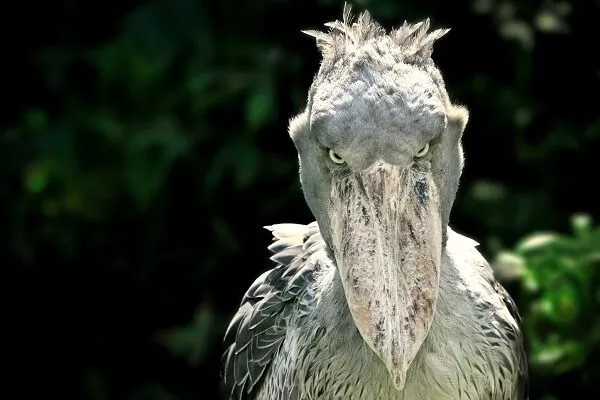
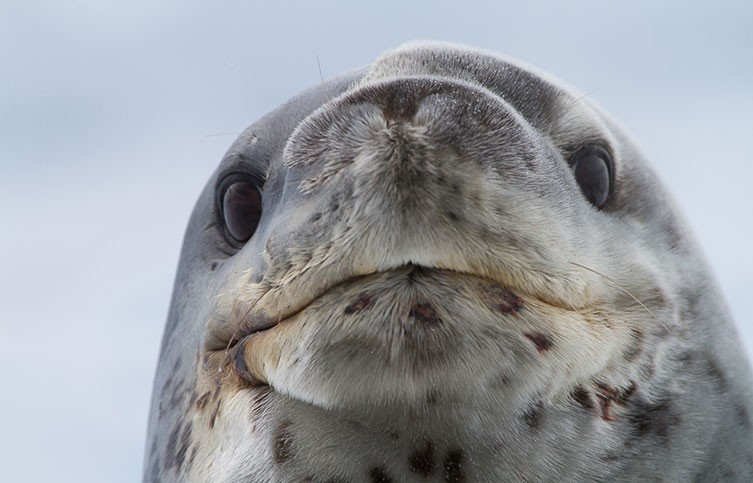
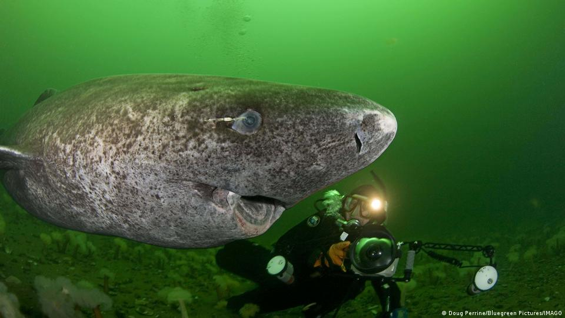

A shoebill challenging you to a staring contest.
The shoebill is a large, carnivorous, prehistoric-looking bird found
in East African freshwater swamps. Their name comes from their
oversized beaks that resemble a Dutch clog. The rest of their body is
also really strange—with long legs like an ostrich and a body
like a stork. Their diet mainly consists of fish, but they've also
been known to eat small snakes, frogs, and baby crocodiles.
A shoebill gazing off into the distance.
Fun Facts
Shoebills make excellent parents! The female lays 1 to 3 eggs but they
rarely raise more than one chick. The younger chicks are usually left
to die and are only kept as "back-ups" in case the eldest chick
doesn't make it.
Shoebills are known to be docile with humans. They tend to just greet
people with long and unblinking death glares.
They can clatter their bills to sound likemachine guns.
Sloth bear (Melursus ursinus)
Sloth bear family photo.
Sloth bears inhabit a variety of habitats across the Indian
subcontinent. They have shaggy fur, a main around their face, and
3-inch claws. Sloth bears are usually active and in search of food.
They mainly eat bugs and termites but will also eat fruits and honey
when available.
Sloth bear and tiger 1v1.
Fun Facts
Sloth bears are unpredictable and attack humans often. They cause the
highest per-capita human death rate of any bear species.
Adult sloth bears are missing their top two front teeth. This allows
them to easily slurp down termites and other bugs like a vacuum. They
do this while making loud, sucking sounds that can be heard from a
distance.
Sloth bear mothers are the only species of bear to carry their cubs on
their backs. Apparently this is a common behavior in a lot of other
animals that primarily eat ants/termites.
Leopard seal (Hydrurga leptonyx)

Professional leopard seal headshot.
The leopard seal is one of Antarctica's top predators. Their name
comes from their black-spotted coat and predatory nature. Leopard
seals are best known for preying on penguins, but they will also eat
krill, fish, squid, seabirds, and other kinds of seals.
Fun Facts
Leopard seals like to jam. They are known to spend hours every day
underwater singing, while being upside down and rocking from side to
side.
They are ruthless when it comes to killing their prey. The seals sling
penguins in an arc, snapping their neck and neck. They then smash them
repeatedly against the surface of the water until they break open.
Leopard seals are curious unafraid of humans. They've been known to
lunge at ankles and on rare occasions have grabbed people and
attempted to drag them underwater.
Greenland shark (Somniosus microcephalus)

An unsightly greenland shark and a diver.
The greenland shark is the longest-living vertebrate. Scientists
currently estimate that they live anywhere from about 200-500 years.
They primarily live in cold-water environments (-1.6℃ to
12℃) at depths down to several thousand meters below the
surface. This is speculated to be the reason for their extremely long
lifespans.
Fun Facts
Greenland sharks are slow at literally everything they do. They swim
slowly at an average rate of 2.9 kilometers per hour. They grow slowly
at a rate of about 1 cm a year, and don't reach sexual maturity until
they're about 150 years old.
Their meat is toxic to humans when fresh and has a urine-like odor
because of its high concentrations of urea. Despite this, the meat is
considered an exotic delicacy in Nordic countries.
Greenland sharks are scavengers and are attracted to the smell of both
rotting meat and live prey. They mainly eat fish, squid, eels, other
sharks, and seals. Parts of horses, reindeer, moose, and polar bears
have also been found in their digestive systems. Since these sharks
move so slowly, it's speculated that they have to ambush their prey in
their sleep.
Humboldt squid (Dosidicus gigas)
The Humboldt squid is a large, predatory squid that lives in the
eastern Pacific ocean. They are most commonly found at depths of 200
to 700 meters below the surface. They can grow up to 2.5 meters long
and have a lifespan of only 2 years. On each of the squid's tentacles,
there are hundreds of barb-like hooked suckers. They use them to tear
apart their prey and pull them towards their razor sharp beaks. Their
diet mainly consists of fish, shrimp, and other cephalopods.
Fun Facts
They are nicknamed the "red devil." When under attack by fishermen or
predators, the squid become absolutely fuming and turn a bright red
color.
Humboldt squids can hunt alone or in groups of thousands. One of their
hunting methods includes snatching their prey and pulling them deep
unto the ocean until the victim falls unconcious.
The Humboldt squid has a tendency to meet unfamiliar objects
aggressively. They've attacked deep-sea cameras and rendered them
inoperable. There have been multiple accounts of the squid attacking
fishermen and divers.